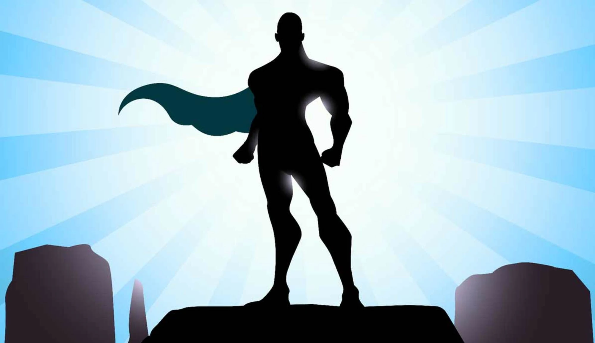

Bohater naszych czasów
Bohater naszych czasów
Każda kultura ludzka potrzebuje nadludzkich postaci. Opowieści o ich heroicznych czynach i nadzwyczajnych przymiotach tworzą przestrzeń mityczną kultury, wyznaczającą horyzont ludzkich wyobrażeń, a także wartości i ideały motywujące do działania.Te działania służą rozwojowi kultury - otwierają przed nią nowe horyzonty, gdzie pojawiają się nowe nadludzkie postaci, wyznaczające nowe wartości i ideały, motywujące do nowych działań. W ten sposób przestrzeń symboliczna wypełnia się postaciami mitycznymi, które umacniają kulturę w wymiarze historycznym i wzmagają jej potencjał rozwojowy. W swojej historii przodujące społeczeństwa przemysłowe (dziś już postprzemysłowe) przeszły głęboką ewolucję, tworząc bogaty panteon postaci mitycznych różnego rodzaju. Ostatnia faza rozwoju tych społeczeństw, polegająca na niebywałym rozkwicie kultury konsumpcyjnej, wprowadziła do tego panteonu nowy rodzaj postaci, określanych mianem idoli. I choć sam ten termin ma głębokie parantele historyczne, to dziś odnosi się do postaci zupełnie nowego rodzaju.
